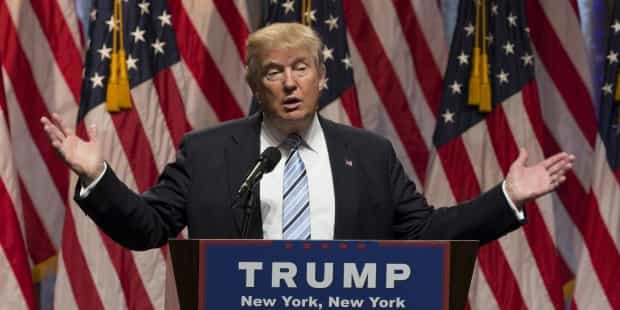
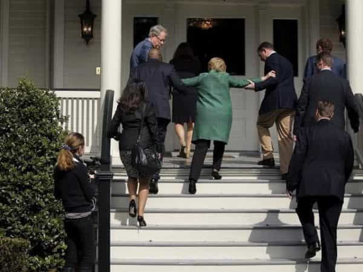

< < < Back
Wall Street, Hollywood, The Media And SJWs Fail To Stop Donald Trump From Becoming America’s Next President – Return Of Kings
Gentlemen, Donald J. Trump is the new President-elect of the United States. Though a few results are still pending, Trump has captured the perennial large battleground states of Ohio, Florida, Iowa, and North Carolina, plus Georgia. And, in a change not seen in more than a generation, he has seized Pennsylvania, Michigan and Wisconsin.
Pennsylvania and Michigan have not voted for a Republican Presidential candidate since 1988 and Wisconsin since way back in 1984. It appears also that states the Democrats thought were well and truly in the bag for them, such as Minnesota, Maine and Virginia, have stayed blue with only wafer-thin or very disappointing margins. The 2nd Congressional district of Maine, a state which divides its electoral votes along with Nebraska, has been called for the Republicans for the first time in nearly 30 years. The last time any Maine district voted for a GOP Presidential candidate was 1988, when George H. W. Bush seized all four electoral votes there.
Importantly, too, avowedly liberal states have seen significant turnouts for Trump. For example, counts so far show that some 40% of voters in Connecticut and Rhode Island, states with even more liberal media bias than the nation generally, have opted for the “racist,” “sexist,” and “homophobic” Republican candidate. Their votes ultimately did not change the electoral college map, but it is heartening to know that even in the eye of the liberal storm, plenty of people are happy to support Trump. This is despite them facing fierce rebukes and, often enough, violence if they make their views public.

The “clown” candidate has beaten 16 more “experienced” Republican challengers and now Hillary Clinton, the most elite-backed candidate in the world’s political history.
As last night’s results have shown, plenty of Trump voters in red and blue states alike have been forced to keep their beliefs quiet. Media airtime for pro-Trump views and stories has been deliberately minimized and frequently demonized by the major networks. Mainstream “journalists” such as Glenn Thrush, Wolf Blitzer, Jake Tapper, Jessica Valenti, and Brent Budowsky have been caught collaborating with both the DNC and Clinton campaign (if you believe that these two groups are actually separate). This only increases the esteem in which the emphatic, resounding Trump victory needs to be held.
And let’s not forget the Senate and House races! After months of spineless GOP cucks rushing to differentiate themselves from Trump, The Donald has still carried them to victory in both Houses of Congress. The White House, Senate and House of Representatives are all in Republican hands until at least the 2018 House midterms. Can you taste the very salty tears of the liberals and SJWs yet?
Every powerful vested interest not only supported Hillary, but did everything they could to ruin Trump
Did you see the last major Hillary Clinton rallies? Celebrities-cum-political hacktivists, chief among them Lady Gaga, Beyoncé, Jay Z, Bruce Springsteen, Bon Jovi, and Katy Perry, all fell into Clinton’s corner well before their final appearances for her, excoriating anyone who had the gall to support Donald Trump. Even long-term Republicans who betrayed Trump, like Arnold Schwarzenegger, were attacked by celebrity SJWs such as Robert De Niro after they joined the “Never Trump” ranks, as if they were dangerous saboteurs. The celebrity paranoia has been palpable for months. Hollywood, that broad industry taking in not just film stars but also musicians, silver screen actors, and comedians, has become little more than an overpaid trade union for Hillary Clinton.
Likewise, every major American company that has come out for a candidate has come out for Hillary. Plenty of “neutral” corporations have undoubtedly been funneling support to the Clinton campaign behind the scenes as well. Prominent billionaires like George Soros and Warren Buffett have done all they could to drag Hillary’s stumbling half-corpse, both literally and figuratively, across the line. Whilst Trump has been supported by a number of ten-figure businessmen, these men are regularly attacked in the media. They include the scapegoated but brave Peter Thiel and Carl Icahn.
And then there’s the mainstream media. Countless studies have indicated that about 85-90% of all journalists are liberal. This over-representation is more salient still in the upper echelons of newsmen and women, particularly prominent mastheads such as The New York Times, Washington Post, and Huffington Post, plus Democratic TV surrogates like CNN and NBC. The 2016 campaign has inflated this preexisting liberal bias, one that plagued the two George W. Bush Administrations but raged even more ferociously against Donald Trump over the last 18 months.
All of these media elites have lambasted Trump for over a year, at the same time they give the paltriest coverage of the disgusting Hillary, Podesta and DNC emails. Everything newsworthy on this front, from the overwhelming presence of Clinton Foundation donors in Hillary’s Secretary of State diary book to more recent revelations about John Podesta’s involvement with Satanic rituals, has been brushed off the balcony by the Wolf Blitzers and Chuck Todds of the American mainstream media. Yet Trump has triumphed nonetheless!
The new administration must crush the criminal Democratic elites and Clinton Foundation with the rule of law

Will Hillary now find herself stumbling into jail?
Inasmuch as the Clinton campaign, the SJWs, and their big business and media enablers have been defeated in this year’s election, they retain very well-oiled and effective means for trying to undermine President Trump once he takes office. Trump’s first priority as Commander-in-Chief must be to remove the bureaucratic apparatchiks preventing a full and frank investigation of the Clinton Foundation. He also needs to clear the way for legal inquiries into the various criminal activities, as uncovered by Wikileaks, perpetrated from within the DNC and Hillary Clinton’s campaign.
The Department of Justice in particular has engaged in all manner of skulduggery, most notably when Attorney-General Loretta Lynch had a private meeting with Bill Clinton during the most crucial time of the FBI investigation into Hillary’s emails. Additionally, elements of the State Department illegally informed Hillary about new developments in that same case. Enough is enough. It’s time to drain the swamp.
Election night produced another curve-ball: after weeks of calling Donald Trump a “sore loser” for him not saying if he would respect the final result, Hillary Clinton refused to speak to her supporters and the American people. It would seem that she only telephoned Trump privately. So who’s the sore loser now?
Last night we were witnesses to the greatest electoral sea-change in American—and perhaps global—history. We cannot lose sight of the work to be done, but for the next 24 hours we can bask in this unprecedented victory against all odds.
Hail to the Chief, Donald J. Trump.
Read More: 4 Reasons Donald Trump Will Win The Presidential Election Of 2016